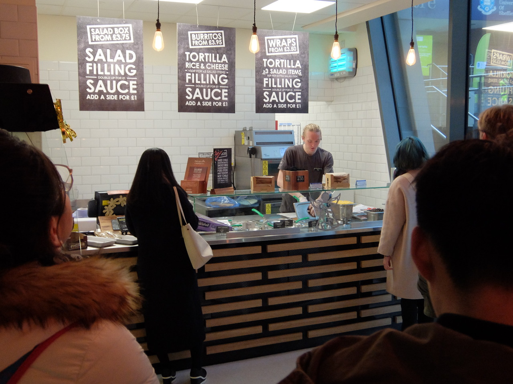

Eat
Where can you get food in the Students' Union?
In the Students' Union you'll find such an amazing range of places to eat, you'll never want to get a Tesco meal deal again!
Bar One

Bar One is the go-to bar for most Students. If you're looking to go out to the pub with your mates then this is the place for you. With a wide range of food and an even wider range of drinks, you can sit down with your friends, have a pint and a burger and watch the night disappear before you know it. And don't worry - there's plenty of vegan and vegetarian options there too. Located on Glossop Road, opposite 301.
Coffee Revolution
You ever feel like going to Starbucks between lectures, but then realise that it's just too far away? Then Coffee Revolution is the place for you! Selling all the coffee you could ever desire, along with a range of little snacks to keep you going when you need that little bit of extra energy. Located on Level 3 of the Students Union.
Grill and Go
Grill and Go is one of the most popular lunch places in the Students' Union by far. There's not just one Grill and Go, there's two! Located on Level 3 of the Students' Union and in Uni Central on Level 4, you'll never be too far away from getting yourself a top-notch burrito or tortilla wrap.
Inox Dine
Inox Dine is a little bit different to everything else on this list - it's not the place you'd go right before a night out, or for a quick bite between lectures. This is somewhere you can go to have a celebration. Being more formal, Inox Dine offers dishes such as grilled fish or steak, and best of all, it is still extremely affordable. Located on Level 5 of the Students' Union.
Interval
If Inox Dine is too formal for you but you still want that restaurant feeling, then Interval is where you should be. Out of all of the places on this list, this is where you will struggle the most to pick what to eat. With pizza, pasta, sandwiches and soup - to name a few - you'll definitely find yourself something to eat here. And of course, there's a whole menu dedicated to vegetarian and vegan options. Located next to the East entrance to the Students' Union.
New Leaf
New Leaf, as you may be able to tell from the name, sells salad bowls. If you're on a diet or just love to eat salad, then this is where you belong. The options are endless: there are so many toppings, dressings and garnishes to choose from, you'll definitely need a few minutes just to read through the entire menu. Located on Level 3 of the Students' Union.
Pearls Bubble Tea
If you're looking for something that's completely different to anything you have ever tried before, then Pearls Bubble Tea should be top of your to-do list. You can get fruit tea or green tea or even Oreo tea with a load of little fruit flavoured popping pearls in them. I can guarantee you will have never tried anything like this ever before. Located on Level 3 of the Students' Union next to Santander.
Proper Pasty
Sometimes we get cravings for different foods, and I'm certain that everyone has had a craving for a proper Cornish pasty - and as the name suggests - Proper Pasty is where that craving will be satisfied. With so many different types of pasty to choose from, there is no doubt that Proper Pasty sell the best pasties in Sheffield. Located on Level 3 of the Students' Union opposite Santander.
Uni Central
Uni Central is home to the fast food of the Students' Union. You want a pizza? Or a burger and chips? Or even some fried chicken? Then Uni Central is the best place for you! Uni Central is undoubtedly the most popular place in the Students' Union for food, so get there early - otherwise you might end up sitting on the floor!
View Deli

If you're looking for somewhere that is exclusively vegan and vegetarian then The View Deli is where you should be. With their whole menu catering to vegans and vegetarians, everything single item on the menu will be both healthy and delicious!